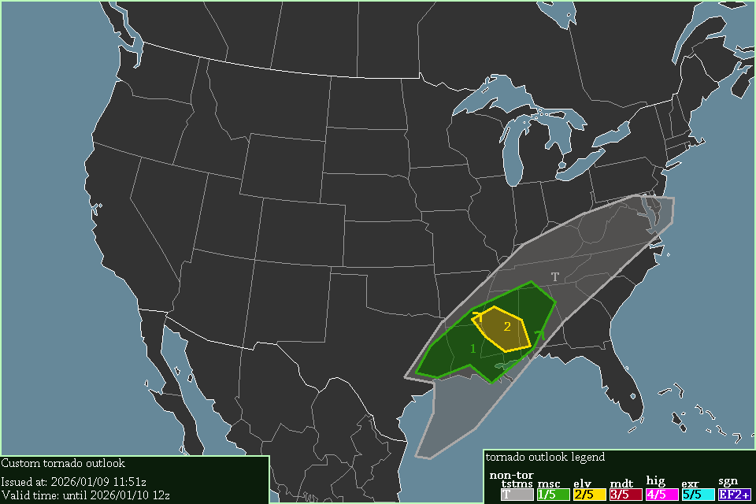

A level 2 elevated risk exists in central Mississippi, starting at 20:00 UTC, 2026/01/09.
Severe thunderstorms are expected surrounding the ELEVATED & MINUSCULE area, reaching into Virginia, Maryland & the Gulf-of-Mexico, starting now.
Severe thunderstorms will form in eastern Texas, southern Mississippi, & southern Alabama, & move northeast through Tennessee & northern Georgia. In southern Louisiana, CAPE reaches 1000 J/kg, which is good for thunderstorm development. in southern Mississippi & southern Alabama, 0-1 km SRH will reach 150 m²/s², & 0-3 km SRH will reach 250-300 m²/s², which could spawn a tornado or 2. These SRH values extend into northern Georgia, but tornadoes seem unfavorable there.
-- Cenn Devel, 2026/01/09 11:51z.